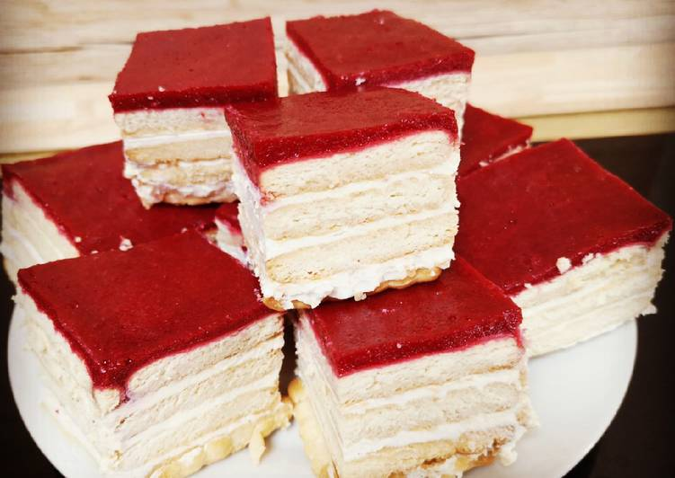

Rakott keksz
Hozzávalók
- 50 dkg négyzet alakú háztartási keksz
- 2 doboz 375 g-os tejföl
- 2 csomag vaníliás cukor
- 6 ek cukor
- 1 db citrom reszelt héja
Elkészítés
A cukrokat a tejföllel összekeverjük addig, amíg a cukor elolvad a tejfölben. A citromot forró vízben megmossuk, megtöröljük, és a héját belereszeljük a tejfölös masszába, majd összekeverjük. A tepsibe rakunk egy sor kekszet, erre rásimítjuk a tejfölös masszát. Erre ismét egy sor kekszet teszünk úgy, hogy ledeje az alsó réteget. Ezt a folyamatot ismételjük oly módon, hogy a végén tejfölös massza kerüljön a tetejére. A hűtőben egy napig pihentetjük, míg a keksz meg nem puhul.